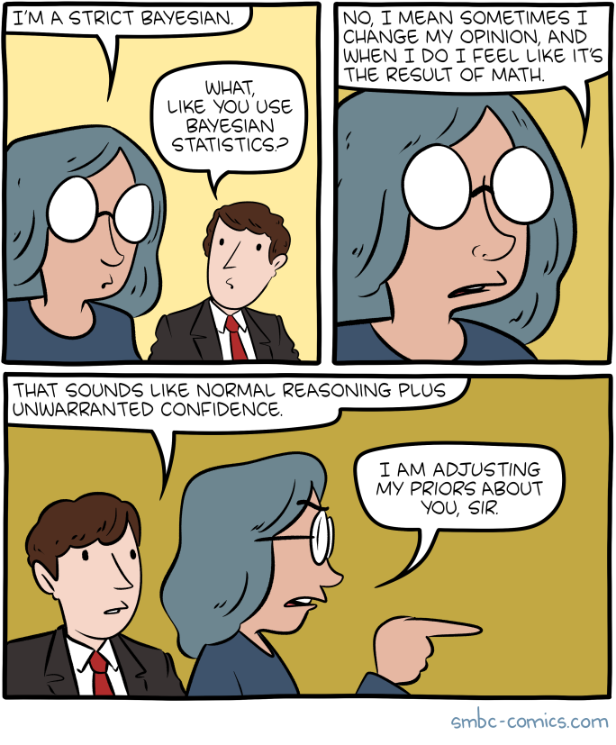
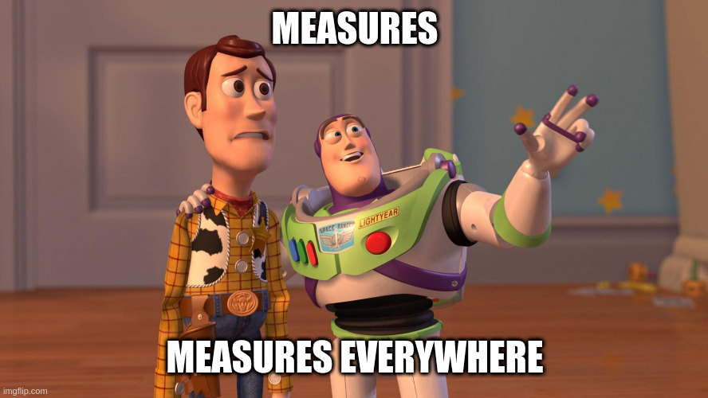
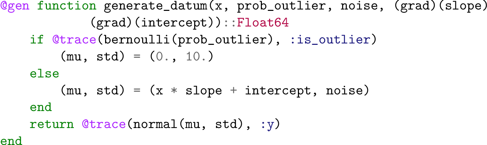
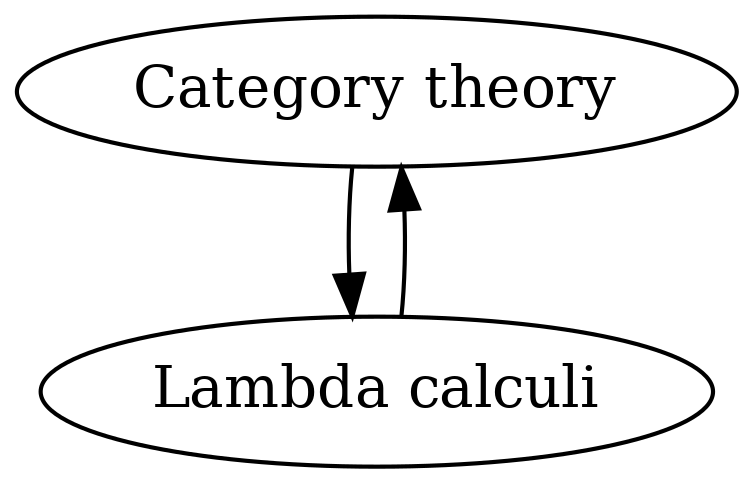

class: center, middle ### Formal verification of higher-order probabilistic programs  #### Presented by: McCoy! --- .cols[ .twenty[## Agenda] .eighty[  1. Probabilistic programming - all about measures 2. Context: Simply typed lambda calculi, Cartesian closedness, etc 3. What does a "higher-order" language with measures look like? 4. Return to paper - the story 5. Why is this useful? * The goal is not to prove everything rigorously - but to support your own understanding of the story (and encourage your own exploration). ]] --- ## Probabilistic programming * Understanding computable representions of operations on measures. ______ .cols[ .twenty[ One example representation: Gen's generative function interface ] .eighty[ <figure class="latex"><figcaption class="latex">A generative function.</figcaption></figure>]] ______ A _generative function_ is a type of computational object which supports a well-defined interface. --- ## Background Denotational semantics of probabilistic programming languages has been a hot topic (small selection) recently: 1. [Denotational Validation of Higher-Order Bayesian Inference](https://arxiv.org/pdf/1711.03219.pdf) 2. [Trace types and denotational semantics for sound programmable inference in probabilistic languages](https://dl.acm.org/doi/10.1145/3371087) 3. [A Convenient Category for Higher-Order Probability Theory](https://arxiv.org/pdf/1701.02547.pdf) I think the key insight driving this interest is the fact that the category of measures `Meas` _is not Cartesian closed_! Without proof, the basic fact is that the set of measurable functions from sets A to B with measurable structure cannot be given a measurable structure. In other words, the set of measurable functions from A to B is not an object in `Meas`. --- Compare this to `Set` - the typical category for higher-order functional programming. * `Set` is Cartesian closed - the set of functions from A to B is also an object in `Set`. ______ .cols[ .thirty[  ] .sixty[ A key concept here is the notion of "internal language" of a category. For `Set` (and, more generally, for any _Cartesian closed category_) - there's a simply typed lambda calculus which models the category, this calculus is called the internal language. ] ] ______ Just to convince yourself of this, consider that `Set` has a natural notion of product and co-product. Imagine what the simply typed lambda calculi equivalent would be? ```haskell data Type = Float | Int | (Type, Type) | Type + Type | Type -> Type ``` --- ## Summary of affairs The key is: `Meas` is not Cartesian closed, so (as computer scientists) we are unable a simple typed lambda calculi representation of `Meas` as a means of formalizing higher-order probabilistic languages. * Now, a natural solution presents itself: let's find a Cartesian closed category which has suitable properties to represent higher-order languages with measures. ______ The approach taken by the previously listed papers is to study the category of _quasi-Borel spaces_ - a category recently introduced in 2017. * [A Convenient Category for Higher-Order Probability Theory](https://arxiv.org/abs/1701.02547) * [The semantic structure of quasi-Borel spaces](https://pps2018.luddy.indiana.edu/files/2018/01/pps18-qbs-semantic-structure.pdf) --- <div class="definition" text="quasi-Borel space">A quasi-Borel space <mathjax>$X$</mathjax> consists of an underlying set <mathjax>$X$</mathjax> and a set of functions <mathjax>$M_X \subseteq (\mathbb{R} \rightarrow X)$</mathjax> satisfying: <ol><li><mathjax>$M_X$</mathjax> contains all constant functions.</li> <li><mathjax>$M_X$</mathjax> is closed under composition with measurable functions. So if <mathjax>$f : \mathbb{R} \rightarrow \mathbb{R}$</mathjax> is measurable and <mathjax>$\alpha \in M_X$</mathjax>, then <mathjax>$\alpha \circ f \in M_X$</mathjax>.</li> <li><mathjax>$M_X$</mathjax> is closed under defining piecewise functions using functions on disjoint Borel domains. So, for any partition of <mathjax>$\mathbb{R} = \cup_{i\in\mathbb{N}} S_i$</mathjax> with <mathjax>$S_i$</mathjax> Borel, and <mathjax>$\{\alpha_i \in M_X\}_{i\in\mathbb{N}^\prime}$</mathjax>, then the piecewise function <mathjax>$\beta(x) = \alpha_i(x)$</mathjax> when <mathjax>$x \in S_i$</mathjax> is in the space <mathjax>$M_X$</mathjax>.</li></ol></div> ______ --- > In this paper, we take a step further and we develop a set of program logics, named PPV, for proving properties of programs written in an expressive probabilistic higher-order language with continuous distributions and operators for conditioning distributions by real-valued functions. ______ From this contribution statement, we should essentially be expecting two things: 1. A simply typed lambda calculus (STLC) whose denotational semantics are given by a quasi-Borel space. This will be the base language. 2. A logic which quantizes over expressions in the STLC. This will be the system which reasons about programs in the base language. --- <div class="definition" text="HPPROG">A higher-order language for probabilistic programming.</div> ```haskell -- A set of basic types + kinds. data BT = Unit | Bool | Nat | Real | PosReal | BT x BT | List(BT) -- A set of types + kinds. data T = BT | M[T] | T -> T | T x T | List(T) -- A set of terms. data Term = -- Variables, builtins, and application. x | c | f | Term Term -- A product constructor. | <Term, Term> -- Record type field projection. | Project(i, Term) -- Pattern matching. | case Term with [match(i, x_i) => Term] over i -- Recursive function definitions. | letrec f x = Term -- Monadic return + bind. | return Term | bind Term Term -- Query computes a posterior from a prior + likelihood. | query Term => Term -- Primitives representing basic distributions. | Uniform(Term, Term) | Bern(Term) | Gauss(Term, Term) ```